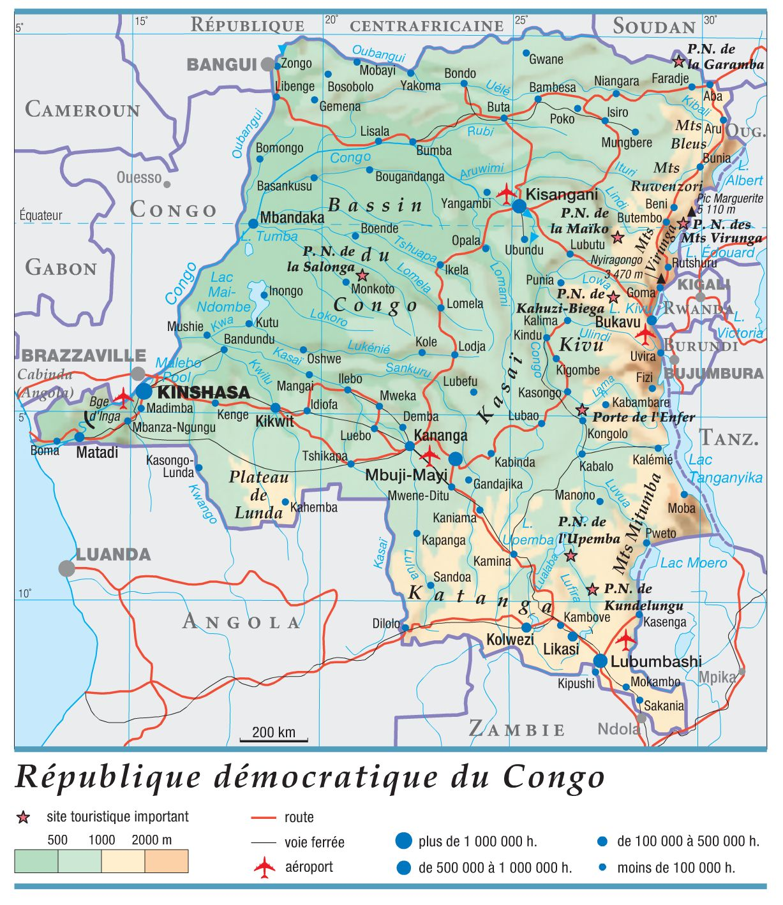
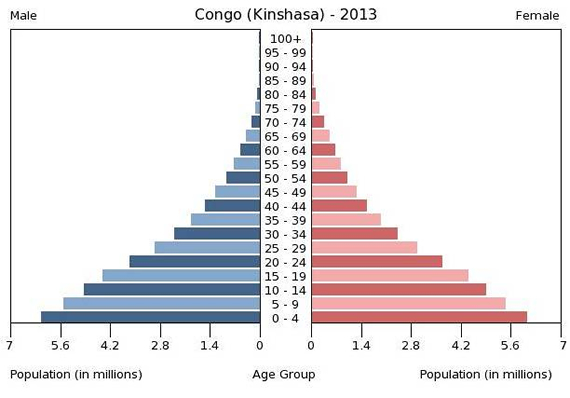
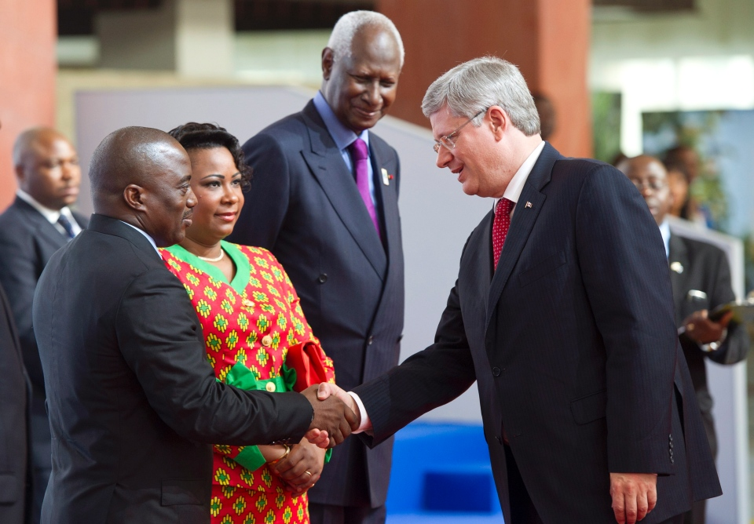
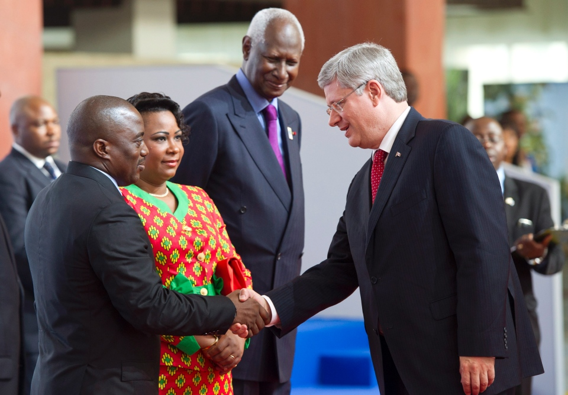

La République Démocratique du Congo
Introduction
La République Démocratique du Congo (aussi appelé RDC) est un pays africain actuellement dirigé par Joseph Kabila. Il est citué dans le centre de l’Afrique, et partage ses frontières  avec la République du Congo, la République centrafricaine, le Soudan du Sud, l’Uganda, le Rwanda, le Burundi, la Tanzanie, la Zambie et l’Angola. Il est le 2e plus grand pays en Afrique par taille de masse terrestre (en km2). De la recherche m’a permis de trouver plus d’information sur la République Démocratique du Congo, que je vais maintenant partager.
Géographie humaine
La République Démocratique du Congo a une grande population d’à peu près 77 000 000 d’habitants sur une superficie de 2 345 409 km2, et a une densité de population de 33  habitants par kilomètre carré. C’est le pays officiellement francophone le plu peuplé, même plus peuplé que la France, qui a environ 67 000 000 d’habitants. Environ 54,3% de la population de la République Démocratique du Congo est de l’âge adulte, 43,1% sont des enfants et 2,6% sont au troisième âge.
La population évolue toujours à cause des naissances, des décès, et de l’immigration et l’émigration. En 2014, il y a eu 35,62 naissances et 10,3 décès par mille personnes. Nettement, il y a aussi eu 0.33 personnes qui ont quitté le pays par mille habitants (ou un taux de migration nette de -0.33).
La grande population de la République Démocratique du Congo est plutôt placé géographiquement dans le pays d’une manière dispersée, mais il y a certaines régions qui ont un placement de population regroupé, par exemple, dans sa capitale, Kinshasa. Kinshasa est une des rares villes modernes, et a une grande population (environ 9 000 000 d’habitants). C’est une des villes urbaines qui ensemble, contiennent 41% de la population totale de la RDC.
Géographie physique
La Terre est divisé en huit écozones. La République Démocratique du Congo est situé dans
 l’écozone Afrotropicale. Le pays traverse l’équateur, avec un tiers au nord de l’équateur,
et deux tiers au sud. Au nord de l’équateur, la saison de pluie dure d’avril à octobre et
la saison sèche dure de décembre à février, tant dis qu’au sud de l’équateur, la saison
sèche dure de novembre à mars et la saison de pluie dure d’avril à octobre. Le pays est
un grand plateau couvert de forêt tropicale, avec des montagnes à l’ouest, de la savane
(des plaines de gazon avec peu d’arbres dans une région tropicale) au sud et au sud-ouest,
et les montagnes Ruwenzori à l’est. Le climat en RDC est chaud et humide près du bassin du
fleuve Congo, plus frais et sec dans les montagnes du sud, et plus froid et mouillé dans
les montagnes à l’est et les montagnes Ruwenzori.
l’écozone Afrotropicale. Le pays traverse l’équateur, avec un tiers au nord de l’équateur,
et deux tiers au sud. Au nord de l’équateur, la saison de pluie dure d’avril à octobre et
la saison sèche dure de décembre à février, tant dis qu’au sud de l’équateur, la saison
sèche dure de novembre à mars et la saison de pluie dure d’avril à octobre. Le pays est
un grand plateau couvert de forêt tropicale, avec des montagnes à l’ouest, de la savane
(des plaines de gazon avec peu d’arbres dans une région tropicale) au sud et au sud-ouest,
et les montagnes Ruwenzori à l’est. Le climat en RDC est chaud et humide près du bassin du
fleuve Congo, plus frais et sec dans les montagnes du sud, et plus froid et mouillé dans
les montagnes à l’est et les montagnes Ruwenzori.
Géographie économique
La République Démocratique du Congo est un pays riche en ressources naturels. Leurs
industries de base (exportations) sont l’or, le diamant, le cuivre, le cobalt, le coltan,
 le zinc, l’étain et le tungstène, le pétrole brut, les produits de bois, et le café.
L’industrie du bois (les scieries, etc) est assez grand en République Démocratique du Congo,
et il y a une abondance d’arbres pour cet industrie. La plupart du bois (environs 80%)
est exporté vers l’Europe. L’énergie produite avec le bois est très utilisé en RDC, et le
bois est utilisé pour produire à peu près 95% de toute l’énergie pour le pays. Chaque
habitant Congolais utilise en moyenne 80 à 95 kilogrammes de charbon de bois annuellement.
Mais la République Démocratique du Congo n’offre pas seulement des produits, il y a aussi
des services (troisième secteur). En 2005, à peu près 27,9% de toute l’argent dépensé en
RDC était au troisième secteur, qui est surtout composé de transport et de télécommunications.
le zinc, l’étain et le tungstène, le pétrole brut, les produits de bois, et le café.
L’industrie du bois (les scieries, etc) est assez grand en République Démocratique du Congo,
et il y a une abondance d’arbres pour cet industrie. La plupart du bois (environs 80%)
est exporté vers l’Europe. L’énergie produite avec le bois est très utilisé en RDC, et le
bois est utilisé pour produire à peu près 95% de toute l’énergie pour le pays. Chaque
habitant Congolais utilise en moyenne 80 à 95 kilogrammes de charbon de bois annuellement.
Mais la République Démocratique du Congo n’offre pas seulement des produits, il y a aussi
des services (troisième secteur). En 2005, à peu près 27,9% de toute l’argent dépensé en
RDC était au troisième secteur, qui est surtout composé de transport et de télécommunications.
Liaisons internationales
Selon le site web de La Banque Mondiale, la République Démocratique du Congo est un pays
en développement parce que son revenu national brut par habitant (selon Wikipedia,
le revenu national brut est la somme de toute l’argent gagné dans le pays, donc pour trouver
 le RNB/habitant, on le divise par le nombre d’habitants) est moins que 11 905 dollars
américains annuellement. La RDC a un niveau de produit intérieur brut (la valeur de ce qui
est produit à l'intérieur du pays)La pauvreté dans ce pays veut dire que souvent, les habitants
n’ont pas les moyens de se permettre d’avoir des soins de santé qu’ils ont besoin. Le Canada
veut changer cela. En 2014, le Canada a annoncé qu’ils allaient concentrer leurs efforts
de développement international sur la République Démocratique du Congo. En addition de

vouloir diminuer les niveaux de pauvreté dans la RDC et fournir des soins de santé, le
Canada veut aussi fournir des traitements physiques et psychologiques pour les victimes de
violence sexuel et aider à garder la paix dans ce pays. Entre 2012 et 2013, le Canada a
contribué à peu près 51 310 000$ pour aider au développement de la République Démocratique
du Congo. Les activités canadiennes en RDC sont centrés dans l’ambassade canadienne à Kinshasa.
Il y a aussi un peu de commerce entre le Canada et la DRC. Les deux pays ont échangé environ
51 500 000$ de biens en 2014.
le RNB/habitant, on le divise par le nombre d’habitants) est moins que 11 905 dollars
américains annuellement. La RDC a un niveau de produit intérieur brut (la valeur de ce qui
est produit à l'intérieur du pays)La pauvreté dans ce pays veut dire que souvent, les habitants
n’ont pas les moyens de se permettre d’avoir des soins de santé qu’ils ont besoin. Le Canada
veut changer cela. En 2014, le Canada a annoncé qu’ils allaient concentrer leurs efforts
de développement international sur la République Démocratique du Congo. En addition de

vouloir diminuer les niveaux de pauvreté dans la RDC et fournir des soins de santé, le
Canada veut aussi fournir des traitements physiques et psychologiques pour les victimes de
violence sexuel et aider à garder la paix dans ce pays. Entre 2012 et 2013, le Canada a
contribué à peu près 51 310 000$ pour aider au développement de la République Démocratique
du Congo. Les activités canadiennes en RDC sont centrés dans l’ambassade canadienne à Kinshasa.
Il y a aussi un peu de commerce entre le Canada et la DRC. Les deux pays ont échangé environ
51 500 000$ de biens en 2014.
Sources
- http://en.wikipedia.org/wiki/Democratic_Republic_of_the_Congo
- http://statistiques-mondiales.com/congo_kinshasa.htm
- http://fr.wikipedia.org/wiki/Culture_de_la_R%C3%A9publique_d%C3%A9mocratique_du_Congo
- http://fr.wikipedia.org/wiki/G%C3%A9ographie_de_la_R%C3%A9publique_d%C3%A9mocratique_du_Congo
- http://en.wikipedia.org/wiki/Economy_of_the_Democratic_Republic_of_the_Congo
- http://fr.wikipedia.org/wiki/Industrie_du_bois
- http://www.researchgate.net/profile/Guillaume_Lescuyer/publication/262856121_Le_march_domestique_du_sciage_artisanal_en_Rpublique_dmocratique_du_Congo__Etat_des_lieux_opportunits_dfis/links/00b495390517ea76b9000000.pdf
- http://www.cifor.org/publications/pdf_files/infobrief/3678-brief.pdf
- https://en.wikipedia.org/wiki/Geography_of_the_Democratic_Republic_of_the_Congo
- https://en.wikipedia.org/wiki/Congo_River
- http://www.isi-web.org/component/content/article/5-root/root/81-developing
- http://www.canadainternational.gc.ca/congo/bilateral_relations_bilaterales/canada_drc-rdc.aspx?menu_id=7&lang=eng
- https://fr.wikipedia.org/wiki/Écozone
- https://fr.vikidia.org/wiki/Pays_les_moins_avancés
- https://fr.wikipedia.org/wiki/Revenu_national_brut
- http://www.coopami.org/images/pyramide/congo_kinshassa%202013.jpg
- http://blog.wwf.ca/files/2011/05/May11-Children-selling-coal-in-Goma-Democratic-Republic-of-Congo-c-Kate-Holt-WWF-UK.jpg
- http://www.larousse.fr/encyclopedie/data/cartes/1306044-République_démocratique_du_Congo.HD.jpg
- https://upload.wikimedia.org/wikipedia/commons/7/73/Ecozones.png
- http://flagpedia.net/data/flags/ultra/cd.png
- https://simple.wikipedia.org/wiki/Gross_domestic_product
- https://upload.wikimedia.org/wikipedia/commons/thumb/b/bd/Democratic_Republic_of_the_Congo_GDP_evolution-fr.svg/370px-Democratic_Republic_of_the_Congo_GDP_evolution-fr.svg.png
- https://www.youtube.com/watch?v=PiNj-NGHL_w
{kind=link}
{kind=link}
{kind=link}
{kind=link}
{kind=link}